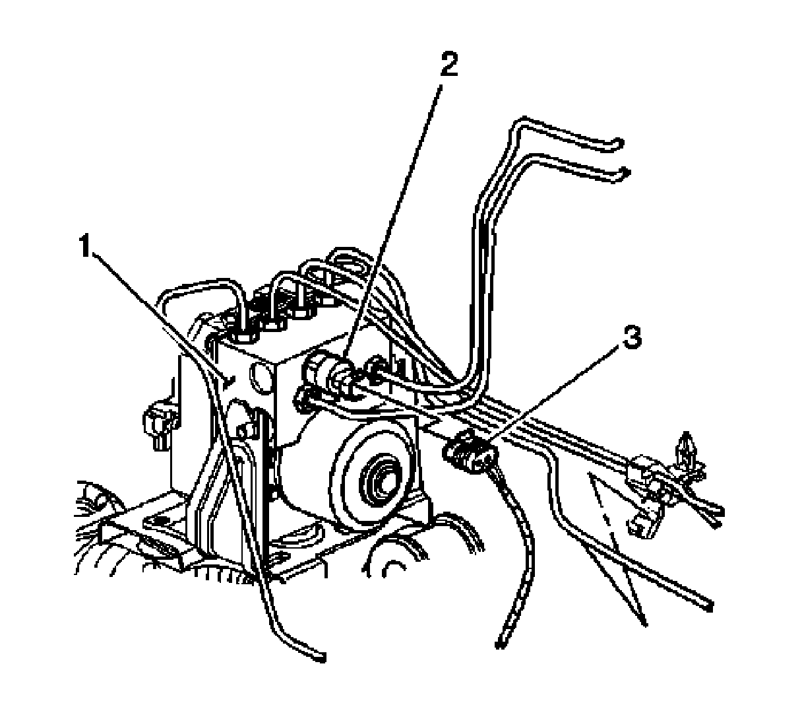

Brake Fluid Pressure Sensor/Switch: Service and Repair
Brake Fluid Pressure Sensor Replacement
Removal Procedure
Important: The area around the electronic brake control module (EBCM) must be free from loose dirt to prevent contamination of disassembled ABS components.
1. Thoroughly clean all contaminants from around the EBCM.

2. Disconnect the brake fluid pressure sensor electrical connector (3) from the brake fluid pressure sensor (2).
3. Remove the brake fluid pressure sensor (2) from the electronic brake control module (EBCM) (1).
Installation Procedure
Notice: Refer to Fastener Notice (Fastener Notice) .
1. Install the brake fluid pressure sensor (2) to the EBCM (1).
Tighten the sensor to 17 N.m (13 lb ft).
2. Connect the brake fluid pressure sensor electrical connector (3) to the brake fluid pressure sensor (2).
3. Fill and bleed the hydraulic brake system. Refer to Master Cylinder Reservoir Filling (Master Cylinder Reservoir Filling) and to Hydraulic Brake System Bleeding (Pressure) (Service and Repair)Hydraulic Brake System Bleeding (Manual) (Service and Repair) .
4. Perform the Auto Bleed Procedure. Refer to Antilock Brake System Automated Bleed Procedure (Service and Repair) .
5. Perform the ABS Diagnostic System Check. Refer to Diagnostic System Check - Vehicle (Initial Inspection and Diagnostic Overview) .